Projecte d'alliberament nacional
Efemèride
El 24 de juliol de 2018, als jardins del Palau Robert de Barcelona es constitueix el col·lectiu "27 d'octubre", per debatre un projecte per canalitzar el neguit, la crispació i desencís de la gent, per fer factible i realista el procés d'independència, i es crea el Comitè de Transitorietat Nacional.
Fundació
El 9 de setembre de 2019, es conclou què el projecte per esdevenir república, ha de ser similar al de la creació de l'estat francès el 1789, en els processos de la Bastilla. I doncs, prenent aquella fita com a exemple, es funda l'assemblea de representants per la república el dia 20 del mateix mes, i què ha d'encapçalar i liderar el procés d'emancipació nacional de l'estat català confederat entre les nacions constituents del país català, el país valencià i el país balear, i fer-ho factible en el menor plaç de temps possible, però, sense marcar-nos una data en concret.
Propostes
Deixant de banda la crisi sanitària del 2020~2022, els i les integrants de l'arc, hem estat fent feina, a continuació us presentem les primeres propostes per crear les condicions necessàries per estructurar l'estat català amb la finalitat d'aixecar la suspensió de la DUI el dia en què el plenari de l'assemblea cridi a sometent al poble català, per alliberar-nos.
Les estructures de l'Estat
Les primeres propostes per crear les condicions necessàries per estructurar l'estat català confederat.
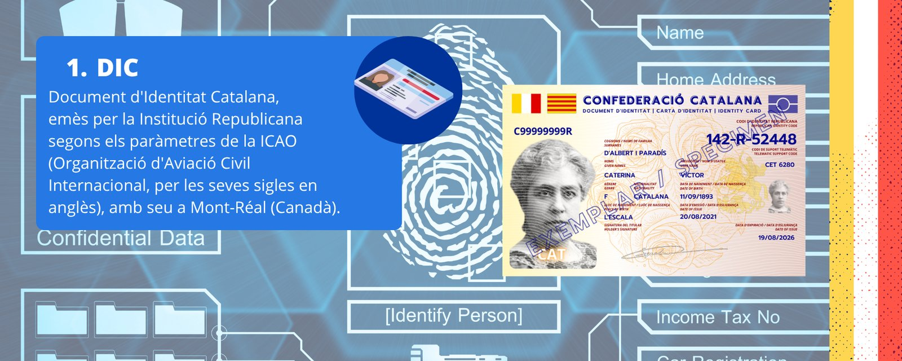
Sobre el Cens Sobirà
Registrar-se o adherir-se al projecte d'emancipació nacional, comporta necessàriament inscriure's al Cens Sobirà de l'Assemblea de Representants, iniciat el 2018. Una vegada inscrits a aquest cens, el Consell d'Estat us farà arribar el DIC. Si elegiu la opció de l'e-Catalan Kit, o d'un certificat de pertinença al moviment de la minoria nacional, si elegiu tant sols el certificat. La obtenció del DIC és mentrestant, optativa, ja que l'Estat no es troba implementat (sí declarat); però serà necessari tenir-lo si es pretén relacionar-se, amb major facilitat, amb la Institució Constituent i amb els altres organismes sobirans, colonials o internacionals, que tenen subscrita una col·laboració amb l'entitat rectora del projecte, i per extensió, amb els seus membres inscrits. Per garantir que la persona què s'inscriu, vol realment esdevenir ciutadana del nou Estat, es requerirà que per adquirir-la, manifesti voluntàriament, mitjançant declaració jurada, perdre les nacionalitats, espanyola o francesa, en qualsevol cas.
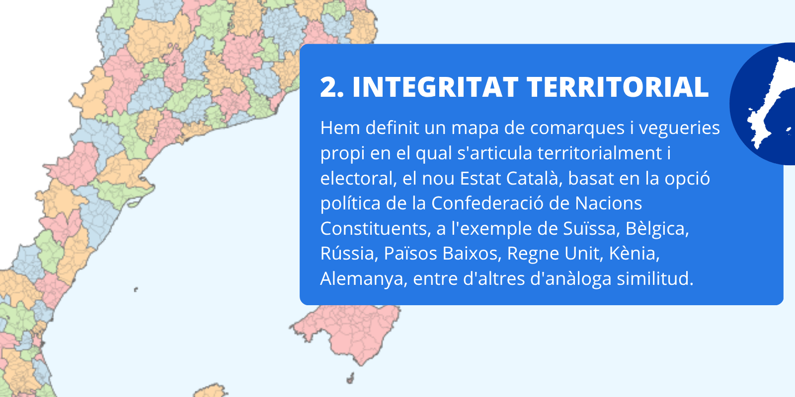
Organització electoral
Culminat què sigui el cens sobirà, sino en la seva totalitat, en un percentatge òptim, convocarem a tota la població registrada, a l'inici del procés constituent, pel qual, hauran d'elegir, seguint el procediment electoral federal, tants síndics i veguers, com comarques i vegueries existents n'hi hagi, que seran els representants provisionals què formaran el Ple de l'Assemblea, la cambra legislativa constituent en el seu màxim esplendor i apogeu, i d'on emanaran la resta de poders de l'Estat.
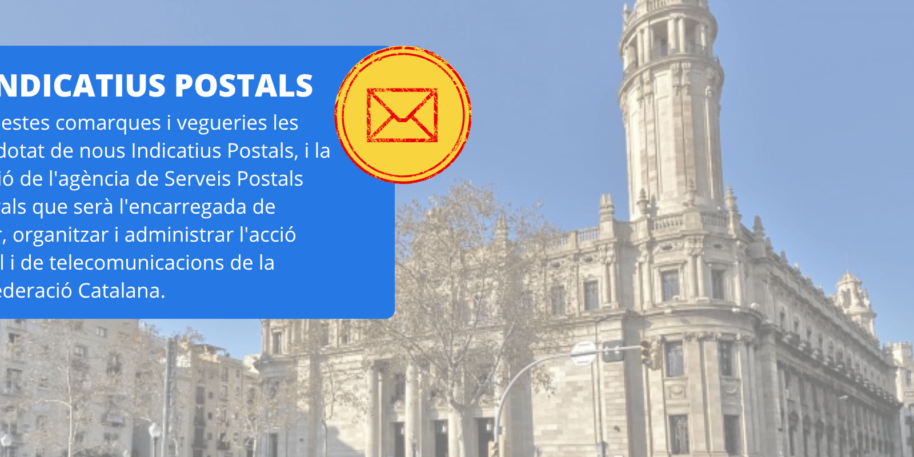
Organització Postal i de Telecomunicacions
El Consell Provisional de l'Estat català, ha creat, inspirant-se en el model de codificació postal anglosaxó, uns indicatius postals propis, per vertebrar i dirigir l'acció postal pancatalana des d'una agència de missatgeria i telecomunicacions, amb la finalitat d'esborrar els antics "códigos postales" espanyols, francesos i italians, del marc mental colonial, i anar substituint-lo progressivament pel de l'Estat sobirà.
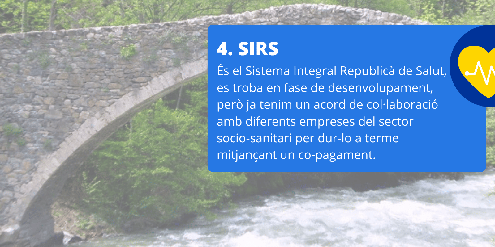
Socors social, pensions, prestacions per desocupació i anàlegs
Un dels pilars base d'un Estat sobirà, és la capacitat d'emetre pagaments, generar rebuts i compensar deute amb els seus conciutadans, per garantir-los una vida digna, segons el que prefixi la Constitució Federal. En la Confederació Catalana, un dels mecanismes mínims necessaris per a l'òptim funcionament de les Estructures d'Estat, és que els seus conciutadans (ciutadans i residents), abonin taxes i impostos per garantir, com a contrapartida, l'accés a serveis excel·lents, com el de salut. Aquests abonaments es gestionaran des de l'Agència Federal de Tributs i Finances, per fer possible què una vegada aixecada la DUI, la població tingui garantit l'accés i gaudi al metge, la farmàcia o qualsevol altra solució sanitària.
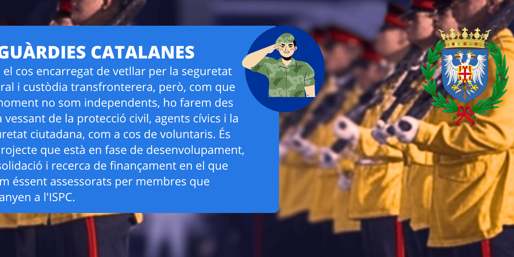
Exèrcit federal
Tot Estat, ha de poder garantir a la seva població, que l'espai vital on decideixi fixar residència i desenvolupar la seva vida, formar el seu nucli familiar i consolidar el seu futur econòmic, social, laboral, educatiu i personal, estigui protegit pels drets i obligacions que emanin de la Constitució Federal. Per això el Consell d'Estat, ha restituït el "Reial Cos de Guàrdies Catalanes", dissolt el 1714 pels decrets de nova planta, i l'està organitzant seguint els estàndards actuals, segons el principi de sometents. Tot ciutadà pancatalà major de vint-i-un anys i menor de cinquanta-vuit, estarà cridat a la defensa de la Pàtria, iniciant-se en un programa d'instrucció de divuit mesos. Aixecada què sigui la DUI, tots els cossos de seguretat existents dins el territori reclamant de la Confederació, restaran dissolts i els seus efectius, prèviament registrats com a ciutadans, s'integraran en aquest Reial Cos.
El Cos Federal de Guàrdies Catalanes, serà el custodi exclusiu de la seguretat ciutadana i custòdia transfronterera, a tots els nivells administratius existents en la Confederació, comunals, nacionals i federals.
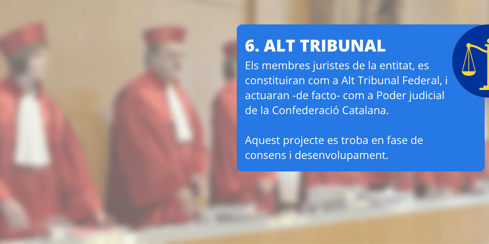
Alt Tribunal
Les persones registrades amb graus o coneixements vàlids i demostrables en dret, ciències polítiques i altres què se'n derivin, podran sol·licitar, mitjançant concurs d'oposició, formar part del quart poder de l'Estat, el Judicial, garant dels drets i obligacions constitucionals que les persones ens hem donat entre nosaltres, com a dipositàries de la sobirania què compartim. L'edat màxima per formar-ne part, seran els setanta-cinc anys.
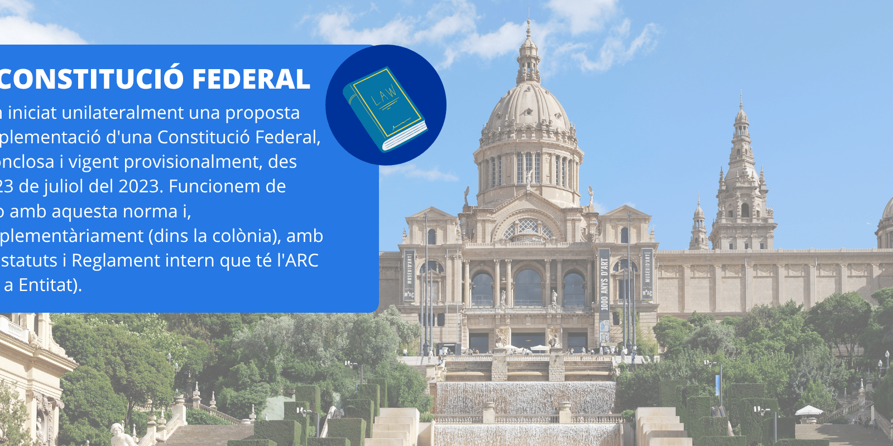
Llei Fonamental
Des del 23 de juliol de 2023, existeix en el sé de la Institució Constituent, una llei fonamental promulgada amb caràcter provisional que regula els procediments mínims del nou Estat federal. En pic s'hagi assolit la plena independència de tot el territori reclamant, i consolidat què sigui el projecte d'emancipació nacional, els poders provisionals de l'Estat, convocaran a la ciutadania a un procés constituent propi, per elegir vertaderament l'Estat que volem, amb la diferència de no haver de veure'ns coaccionats per agents externs ni pel poder colonitzador del Regne d'Espanya o de la República Francesa, que han impedit des de tres-cents anys i escaig, que Catalunya continuï essent un Estat sobirà, com ho fou fins l'Era moderna.
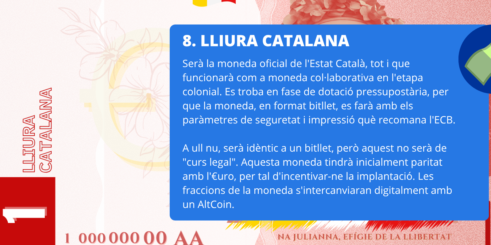
La Lliura Catalana (Ꞓ), la moneda de la Confederació
Existirà tant sols en format paper o nota bancària, amb un valor fiduciari (no recolzat per cap bé tangible), amb els paràmetres de seguretat recomanats internacionalment, en la mesura del possible. Hi hauran inicialment set escales amb un valor facial entre Ꞓ1 i Ꞓ100 lliures. Mentre no s'aixequi la DUI, però, l'Euro (€), continuarà sent la única moneda de curs legal.
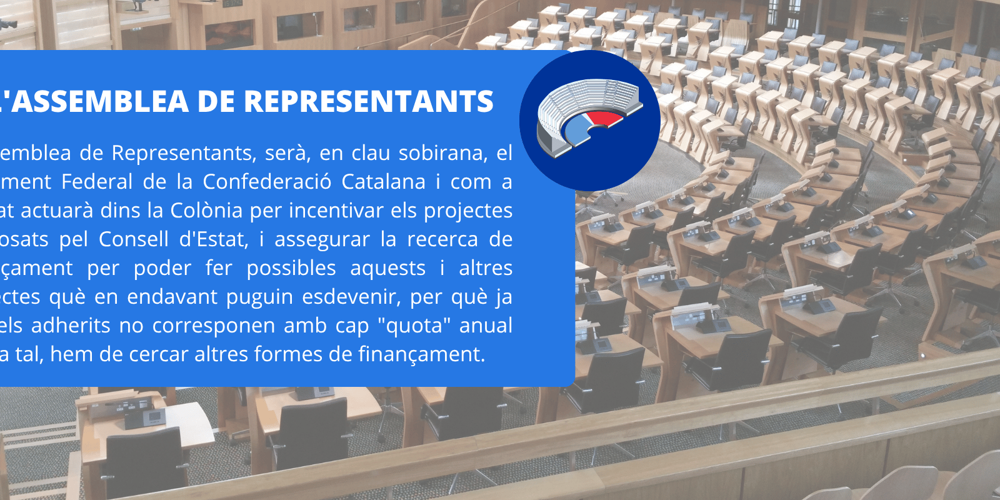
El Parlament Federal
El parlament federal, o Cambra o Assemblea de Representants, és el parlament de la Confederació, està constituïda per totes les comarques, vegueries, nacions constituents i territoris singulars, què basteixen la Confederació Catalana, com un Estat sobirà, lliure i democràtic, de dret. Pel cap-baix, hi hauran un nombre aproximat d'uns 400 representants, entre síndics i veguers, cinc dels quals, quedaran circumscrits als escons d'Ultramar o "Catalans a l'exterior".
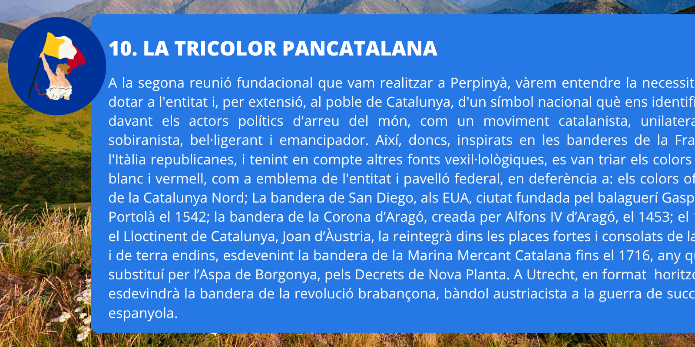
El pavelló federal
La tricolor pancatalana, va ser restituïda oficialment el 29 de febrer del 2020, i hissada al Castellet de Perpinyà en un acte simbòlic de restitució de sobirania.
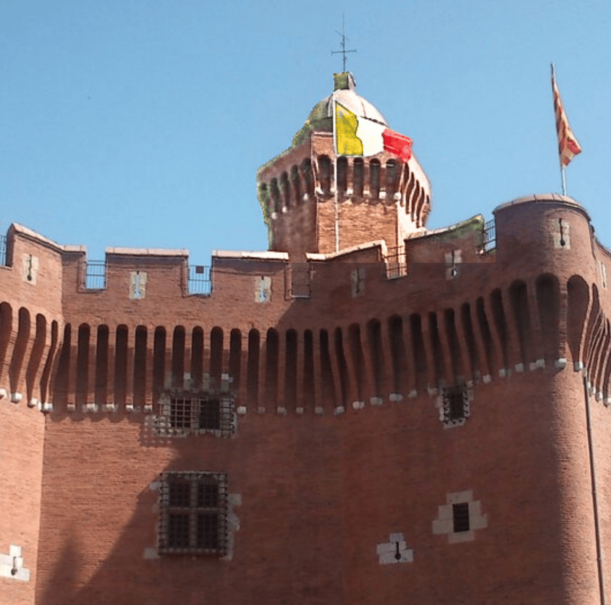
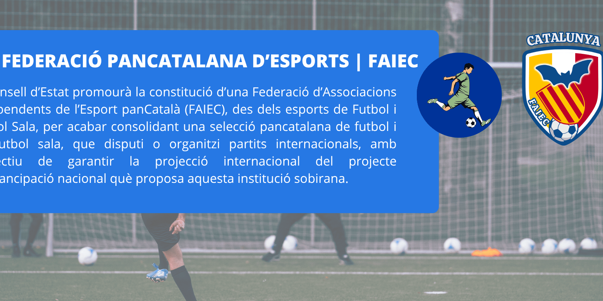
La Federació d'Associacions Independents de l'Esport panCatalà
La FAIEC és el projecte aglutinador de Federació d'Esports de la Confederació Catalana què iniciarà les seves activitats en breu, des de la disciplina del futbol i el futbol sala. En conveni amb una organització independent de la FIFA i la UEFA, s'articularà una lliga pancatalana de futbol i de futbol sala, que permetrà trobar esportistes i convocar-los per jugar contra altres Estats i Nacions no reconegudes, o parcialment reconegudes, del ventall internacional, i representar a la Confederació Catalana.
Participa en l'alliberament nacional
Registrar-se